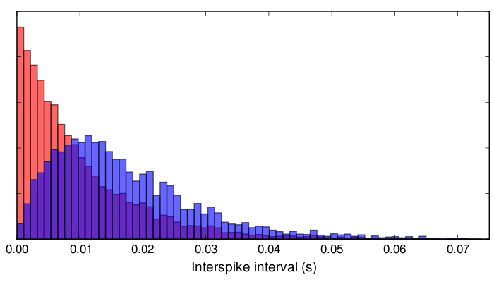
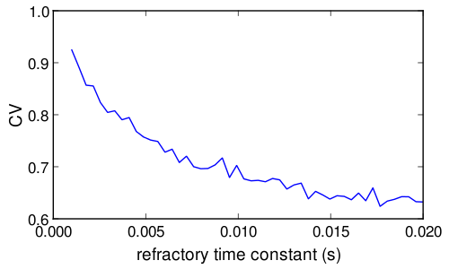
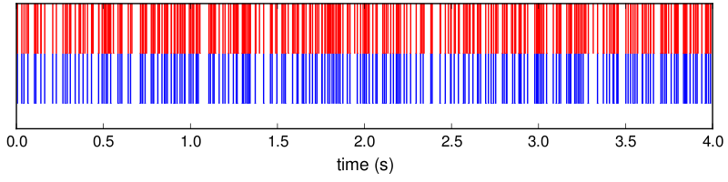

Add a refractory period to the Poisson spike generator by allowing the firing rate to depend on time. Initially, set the firing rate to a constant value, \(r(t)=r_0\). After every spike, set \(r(t)\) to 0, and then allow it to recover exponentially back to \(r_0\) with a time constant \(\tau_{\text{ref}}\) that controls the refractory recovery rate. In other words, have \(r(t)\) obey the equation
except immediately after a spike, when it is set to 0. Plot the coefficient of variation as a function of \(\tau_{\text{ref}}\) over the range \(1\,\text{ms}\leq \tau_{\text{ref}} \leq 20\, \text{ms}\), and plot interspike interval histograms for a few different values of \(\tau_{\text{ref}}\) in this range. Compute the Fano factor for spike counts obtained over counting intervals ranging from 1 to 100 ms for the case \(\tau_{\text{ref}}=10 \,\text{ms}\).
We use the spike thinning technique (or rejection sampling) described in page 30 of the book. We first generate the Poisson train with rate \(r(t)=r_0\).
import numpy as np T = 100 # duration of the trial in seconds tau_ref = 1e-2 # refractory time scale (in seconds) r0 = 100 # constant rate (in hertz) N_spikes = T * r0 # average number of spikes per trial isi_homog = -np.log(np.random.rand(N_spikes)) / r0 # random ISIs at maximum rate
It is convenient to define a function that, given a sequence of ISIs, returns the ISIs of the spike train incorporating refractoriness. The function takes two arguments: the sequence of ISIs of the homogeneous Poission train, and the recovery time constant \(\tau_{\text{ref}}\).
def thin_isi(isi_homog, tau_r): """Given an homogeneous Poisson train defined by the sequence of inter-event intervals `isi_homog`, return the corresponding sequence when a a non-homogeneous The first argument is a list or array of inter-spike intervals, assumed to correspond to a homogeneous Poisson train. The second argument is the time constant of the recovery process, in the same units as the ISIs. """ sp_times_homog = np.cumsum(isi_homog) # spike sequence at original rate sp_times = [] sp_times.append(sp_times_homog[0]) # 1st spike last_spike = sp_times[-1] x = np.random.rand(N_spikes - 1) for i, t in enumerate(sp_times_homog[1:]): z = 1 - np.exp(-(t - last_spike) / tau_r) # Thinning if (x[i] < z): sp_times.append(sp_times_homog[i+1]) last_spike = sp_times[-1] else: continue sp_times = np.array(sp_times) # convert list to array isi = np.diff(sp_times) # difference between successive spikes return isi isi_ref = thin_isi(isi_homog, tau_ref)
We can now plot the interspike interval histogram. Here we compare the histogram of inter-spike intervals of two processes: the homogeneous process and the process incorporating the recovery mechanism with time constant \(\tau_{\text{ref}}=10\,\text{ms}\).
# Plot ISI histograms import matplotlib.pyplot as plt n_bins = 60 xmin, xmax = 0, 0.8 * isi_ref.max() bins = np.linspace(xmin, xmax, n_bins, endpoint=True) plt.hist(isi_homog, bins, normed=1, facecolor='red', alpha=0.6) isi_ref = thin_isi(isi_homog, tau_ref) plt.hist(isi_ref, bins, normed=1, facecolor='blue', alpha=0.6) plt.xlabel("Interspike interval (s)") plt.setp(plt.gca(), 'yticklabels', []) # remove ticklabels on y axis
The dependence of the CV on the recovery time constant can now be plotted easily.
# Plot CV versus recovery time constant taus = np.linspace(1e-3, 2e-2, 50) cvs = np.zeros_like(taus) for i, tau in enumerate(taus): # Generate a new point process for each tau_ref isi_homog = -np.log(np.random.rand(N_spikes)) / r0 isi = thin_isi(isi_homog, tau) cvs[i] = np.std(isi) / np.mean(isi) plt.plot(taus, cvs) plt.xlabel("refractory time constant (s)") plt.ylabel("CV")
We can also plot the spike train before and after thinning
# Define spikes times sp_times_max = np.cumsum(isi_homog) isi_ref = thin_isi(isi_homog, 0.01) # tau = 10 ms sp_times_ref = np.cumsum(isi_ref) # Plot spikes plt.clf() tmin, tmax = 0.0, 4.0 # look only the first 4s to avoid clutter sp_t_ref = sp_times_ref[sp_times_ref < tmax] # chop thinned spike train, sp_t_max = sp_times_max[sp_times_max < tmax] # .. and the homogeneous one. plt.vlines(sp_t_ref, 0, 1, 'b') plt.vlines(sp_t_max, 1, 2, 'r') plt.setp(plt.gca(), 'yticklabels', []) # Remove ticklabels on y axis plt.setp(plt.gca(), 'yticks', []) # ..and ticks plt.xlabel('time (s)')
The following lines are rather uninteresting. I just post them as a reminder of how to save figures with a particular size in pixels, something that I find inexplicably painful to do in matplotlib.
h = plt.gcf() # handler of the current picture px_x, px_y = 800, 500 # size in pixels dpi = 100 # dots per inch h.set_dpi(dpi) in_x, in_y = np.array([px_x, px_y]) / dpi h.set_size_inches(in_x,in_y) h.savefig('whatever.png')